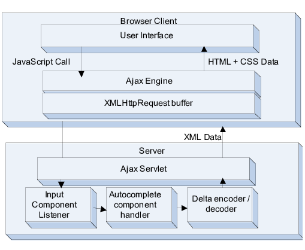

AJAX: Comunicación Asíncrona entre Cliente y Servidor
En el apartado anterior exploramos el concepto de webs dinámicas y cómo la colaboración entre Laravel (servidor) y JavaScript (cliente) permite crear experiencias de usuario rica. En este apartado profundizaremos en la técnica que hace posible esta comunicación: AJAX.
AJAX (Asynchronous JavaScript and XML) es un término coinedo por Jesse James Garrett en 2005 para describir un conjunto de técnicas que permiten a las aplicaciones web comunicarse con el servidor sin necesidad de recargar la página. Aunque el nombre incluye "XML", en la práctica nowadays se utiliza más frecuentemente JSON para el intercambio de datos, pero el concepto permanece igual.
Para comprender realmente qué es AJAX, pensemos en el flujo tradicional de una página web. Cuando el usuario hace clic en un enlace o envía un formulario, el navegador envía una petición al servidor, espera pacientemente a que el servidor procese la solicitud y devuelva una nueva página HTML completa, y luego reemplaza entireamente la página actual por la nueva. Este proceso, aunque funcional, tiene varios problemas: interrumpe la experiencia del usuario, requiere transferir una gran cantidad de datos redundantes (cabeceras, navegación, pies de página), y puede ser particularmente lento en conexiones de internet lentas.
LA función de AJAX es permitir una comunicación parcial. En lugar de reemplazar toda la página, solo necesitamos actualizar las partes que han cambiado. Es como la diferencia entre cambiar una lampara en una habitación completa (recargar toda la página) versus simplemente cambiar la bombilla que se ha fundido (actualizar solo lo necesario).
Qué Significa "Asíncrono"
La palabra "asíncrono" es fundamental para entender AJAX. En programación, una operación síncrona bloquea la ejecución hasta que se completa. Imagina que estás en una tienda y preguntass por un producto: te quedarás parado esperando hasta que el dependiente busque en el almacén y te traiga el producto. No puedes hacer nada más mientras esperas.
Una operación asíncrona, en cambio, no bloquea la ejecución. Es como pedir entrega a domicilio: haces el pedido, sigues haciendo otras cosas en tu casa, y cuando llega el repartidor, te avisan para que recojas el pedido. El código JavaScript puede continuar ejecutándose y respondiendo a otras interacciones del usuario mientras espera la respuesta del servidor.
Esta característica es crucial para la experiencia de usuario. Mientras los datos se cargan desde el servidor, el usuario puede seguir interactuando con la página, haciendo clic en otros elementos, escribiendo en campos, o incluso desencadenando otras peticiones. Todo esto sucede sin que la página se "congele" esperando la respuesta.
El Flujo de AJAX con Laravel
Desde la perspectiva del entorno servidor con Laravel, una petición AJAX no es fundamentalmente diferente a cualquier otra petición HTTP. El servidor receber la petición, ejecuta el código correspondiente, y devuelve una respuesta. La diferencia reside en el formato de esa respuesta.
Endpoints de API vs Vistas Tradicionales
En una aplicación web tradicional con Laravel, cuando un usuario visita una página como "/usuarios", el controlador típicamente hace algo así:
- Consulta la base de datos para obtener todos los usuarios
- Pasa esos datos a una vista Blade
- La vista Blade genera el HTML completo con los datos injectados
- El servidor devuelve ese HTML como respuesta
Todo el HTML generado incluye la estructura completa de la página: la cabecera, la navegación, el contenido de usuarios, el pie de página, y todos los estilos y scripts necesarios.
En una aplicación AJAX, el flujo es diferente:
- El usuario está ya en una página que ya se ha cargado previamente
- JavaScript envía una petición a "/api/usuarios"
- El controlador consulta la base de datos
- Laravel devuelve los datos como JSON, sin generar HTML
- JavaScript recibe el JSON y actualiza solo la parte de la página que muestra los usuarios
La diferencia principal es qué se devuelve: HTML completo en el primer caso, solo datos en JSON en el segundo.

Por Qué JSON y No XML
Aunque AJAX originalmente usaba XML ("X" en AJAX), JSON se ha convertido en el formato preferido por várias razones:
- JSON es más conciso: no tiene las etiquetas de apertura y cierre que tiene XML, por lo que los archivos son más pequeños y las transferencias más rápidas.
- JSON es nativo de JavaScript: un objeto JSON se convierte en un objeto JavaScript con una sola línea de código. XML requiere parseo manual más complejo.
- JSON tiene mejor soporte en Laravel: la función
response()->json()convierte automáticamente arrays y colecciones a JSON bien formateado.
AJAX con fetch() y Laravel
La API moderna para realizar peticiones HTTP en JavaScript es fetch(), una función nativa del navegador que reemplaza a la antigua XMLHttpRequest. fetch() es más sencilla de usar y está basada en Promesas, lo que permite un código más limpio y legible.
Vamos a crear un ejemplo completo: al hacer clic en un botón, solicitamos al servidor una lista de usuarios y la mostraMOS en la página sin recargar.
Crear el endpoint en Laravel
Primero, necesitamos definir la ruta que proporcionará los datos. En Laravel, usamos el archivo de rutas API para este propósito:
<?php
use App\Models\Usuario;
use Illuminate\Http\Request;
Route::get('/api/usuarios', function () {
return response()->json(Usuario::select('id', 'nombre', 'email')->get());
});
En este código, response()->json() es la función helper de Laravel que establece automaticamente las cabeceras correctas (Content-Type: application/json) y serializa los datos a JSON. El método select('id', 'nombre', 'email') de Eloquent es un atajo para especificar qué columnas queremos devolver, lo que es una buena práctica de seguridad: nunca devolvemos más datos de los necesarios.
Para aplicaciones más complejas, usamos un controlador dedicado:
<?php
namespace App\Http\Controllers\Api;
use App\Http\Controllers\Controller;
use App\Models\Usuario;
use Illuminate\Http\JsonResponse;
class UsuarioController extends Controller {
public function index(): JsonResponse {
$usuarios = Usuario::select('id', 'nombre', 'email')->get();
return response()->json($usuarios);
}
}
Los controladores proporcionan una mejor organización cuando la lógica es más compleja. permiten separar claramente las responsabilidades y facilitan el mantenimiento del código. Además, facilitan escribir pruebas unitarias ya que podemos probar cada método independientemente.
<?php
use App\Http\Controllers\Api\UsuarioController;
use Illuminate\Support\Facades\Route;
Route::get('/usuarios', [UsuarioController::class, 'index']);
Nota importante: Laravel diferencia entre routes/web.php y routes/api.php. Las rutas en web.php tienen acceso a las sesiones y autenticación de la web tradicional, mientras que las rutas en api.php son stateless y más ligeras, ideale para aplicaciones AJAX.
El cliente: JavaScript con fetch()
Ahora creamos el HTML y JavaScript que consumirá nuestro endpoint:
<!DOCTYPE html>
<html lang="es">
<head>
<meta charset="UTF-8">
<title>Ejemplo AJAX con fetch()</title>
</head>
<body>
<h1>Lista de Usuarios</h1>
<button id="cargarUsuarios">Cargar Usuarios</button>
<div id="loading" style="display:none;">Cargando...</div>
<ul id="listaUsuarios"></ul>
<script>
document.getElementById('cargarUsuarios').addEventListener('click', function() {
const lista = document.getElementById('listaUsuarios');
const loading = document.getElementById('loading');
// Mostrar indicador de carga
loading.style.display = 'block';
lista.innerHTML = '';
// Realizar la petición al servidor utilizando fetch()
fetch('/api/usuarios')
.then(response => {
// El primer .then() verifica el estado HTTP
if (!response.ok) {
throw new Error('Error HTTP: ' + response.status);
}
// Convertimos la respuesta a JSON
return response.json();
})
.then(usuarios => {
// Procesar los datos recibidos
loading.style.display = 'none';
// Crear un elemento <li> por cada usuario
usuarios.forEach(usuario => {
const li = document.createElement('li');
li.textContent = `${usuario.nombre} (${usuario.email})`;
lista.appendChild(li);
});
})
.catch(error => {
// Manejar errores de red o servidor
loading.style.display = 'none';
lista.innerHTML = '<li style="color:red;">Error: ' + error.message + '</li>';
});
});
</script>
</body>
</html>
El flujo de ejecución de este código merece un análisis detallado:
1. Evento click: Cuando el usuario hace clic en el botón, se ejecuta la función que hemos definido. El navegador ha estado escuchando este evento gracias al addEventListener.
2. Preparación de la interfaz: Antes de realizar la petición, preparamos la interfaz mostrando un mensaje de "Cargando..." y limpiando cualquier contenido anterior en la lista. Esto es importante para dar feedback al usuario.
3. fetch('/api/usuarios'): Esta función initiate una petición HTTP GET a la URL especificada. fetch() devuelve inmediatamente una Promesa, un objeto que representa una operación que no ha completado aún.
4. .then(response => ...): Este método se ejecuta cuando la petición obtiene respuesta del servidor. Aquí es donde verificamos si la petición fue exitosa. La propiedad response.ok es true cuando el código HTTP está entre 200 y 299. Si no, lanzamos un error manualmente para llegar al bloque .catch.
5. response.json(): Los datos llegan del servidor como texto (una cadena JSON). Este método parsea el texto a un objeto JavaScript real. También devuelve una Promesa, por lo que necesitamos otro .then para Procesar los datos.
6. .then(usuarios => ...): Aquí temos los datos convertidos a objeto JavaScript. Recorremos el array con forEach y por cada usuario creamos un elemento <li> que añadimos a la lista.
7. .catch(error => ...): Si algo falla en cualquier paso de la cadena (petición fallida, JSON inválido, error de red), la ejecución salta aquí. Mostramos un mensaje de error para que el usuario Sepa qué pasó.
Versión con async/await (más moderna)
La sintaxis async/await, introducida en ES2017, es una forma más legible de trabajar con promesas. El código se lee como si fuera síncrono, lo que facilita su comprensión:
async function cargarUsuarios() {
const lista = document.getElementById('listaUsuarios');
const loading = document.getElementById('loading');
loading.style.display = 'block';
lista.innerHTML = '';
try {
// await pausa aquí hasta que la promesa se resuelva
const response = await fetch('/api/usuarios');
// Verificamos el estado HTTP
if (!response.ok) {
throw new Error('Error HTTP: ' + response.status);
}
// Parseamos el JSON
const usuarios = await response.json();
loading.style.display = 'none';
usuarios.forEach(usuario => {
const li = document.createElement('li');
li.textContent = `${usuario.nombre} (${usuario.email})`;
lista.appendChild(li);
});
} catch (error) {
// Cualquier error en el try se captura aquí
loading.style.display = 'none';
lista.innerHTML = '<li style="color:red;">Error: ' + error.message + '</li>';
}
}
// Asociar la función al botón
document.getElementById('cargarUsuarios').addEventListener('click', cargarUsuarios);
La palabra clave async antes de la función indica que będzie asynchronous. Dentro de la función, await pausa la ejecución hasta que la Promesa se resuelva, pero no bloqueo el resto de la página: el usuario puede seguir interactuando.
El bloque try/catch captura cualquier error que ocurra durante la ejecución asíncrona: errores de red, códigos HTTP de error, o JSON mal formados.
Ventajas de Utilizar AJAX
La adopción de AJAX supuesto un cambio fundamental en el desarrollo web:
-
Mejora significativa en la experiencia de usuario (UX): Al eliminar las recargas completas de página, la interacción se vuelve fluida e instantánea. El usuario no experimenta el "parpadeo" de recarga que interrumpe su flujo de trabajo.
-
Reducción de carga de red: Solo transferimos los datos necesarios (típicamente unos pocos kilobytes) en lugar del documento HTML completo (que puede fácilmente ser cientos de kilobytes). Esto es especialmente importante en dispositivos móviles con conexiones limitadas.
-
Aumento drástico de interactividad: Los desarrolladores pueden crear aplicaciones que responden en tiempo real: autocompletado, validación instantánea, notificaciones push, actualizaciones en tiempo real, todo ello sin que el usuario tenga que recargar la página.
-
Separación clara de responsabilidades: El código del cliente se especializa en mostrar información y responder a interacciones, mientras que el servidor se centra en procesar lógica de negocio y proporcionar datos. Esta separación facilita el mantenimiento y permite trabajar en paralelo en frontend y backend.
-
Reducción de carga del servidor: Al no tener que generar HTML en cada petición, el servidor hace menos trabajo intensivo. Puede cachear respuestas y servir más usuarios con los mismos recursos.
-
Posibilita nuevos patrones de UI: Patrones impossibles en webs tradicionales como el scroll infinito, arrastrar y soltar, o aplicaciones de una sola página (SPA) solo son posibles gracias a AJAX.
Peticiones POST con JSON
Hasta ahora solo hemOS visto peticiones GET, que simplemente solicitan datos. Para enviar datos al servidor (como al enviar un formulario), hemOS de usar el método POST.
La principal diferencia es que vamos a enviar un cuerpo (body) con los datos:
async function enviarDatos(datos) {
const response = await fetch('/api/usuarios', {
method: 'POST', // Especificamos el método
headers: {
'Content-Type': 'application/json', // Indicamos que enviamos JSON
'X-CSRF-TOKEN': document.querySelector('meta[name="csrf-token"]').content
},
body: JSON.stringify(datos) // Convertimos el objeto a JSON
});
const resultado = await response.json();
return resultado;
}
// Uso de la función
enviarDatos({ nombre: 'Juan', email: 'juan@email.com' })
.then(resultado => console.log('Usuario creado:', resultado));
Análisis detallado de las cabeceras:
'Content-Type: 'application/json': Le dice al servidor que el cuerpo de la petición está en formato JSON. Sin esta cabecera, Laravel podría no procesar correctamente los datos.
'X-CSRF-TOKEN': Esta es una medida de seguridad de Laravel contra ataques CSRF (Cross-Site Request Forgery). El servidor genera un token único para cada sesión, y debe Enviarse en peticiones que modifiquen datos. Si el token no coincide, Laravel rechaza la petición. Esto protege tu aplicación de ataques donde un sitio malicioso intenta hacer peticiones a tu API en nombre de un usuario autenticado.
Para obtener el token CSRF en Blade, simplemente añadims esta línea en el head de nuestra página:
Blade generará automáticamente el token correcto, y JavaScript può leerlo y Enviarl en cada petición POST.
Envío de Formularios Completos
Un patrón común es interceptar el envío de un formulario y enviarlo via AJAX:
document.getElementById('miFormulario').addEventListener('submit', async function(e) {
e.preventDefault(); // Prevenir el envío tradicional
const formData = new FormData(this);
const datos = Object.fromEntries(formData);
try {
const response = await fetch('/api/usuarios', {
method: 'POST',
headers: {
'Content-Type': 'application/json',
'X-CSRF-TOKEN': document.querySelector('meta[name="csrf-token"]').content
},
body: JSON.stringify(datos)
});
if (!response.ok) {
const error = await response.json();
alert('Error: ' + error.message);
return;
}
const resultado = await response.json();
alert('Usuario creado con ID: ' + resultado.id);
} catch (error) {
alert('Error de red: ' + error.message);
}
});
Object.fromEntries(formData) convierte los datos del formulario (que está en formato FormData) a un objeto JavaScript plano, que luego podemos convertir a JSON.